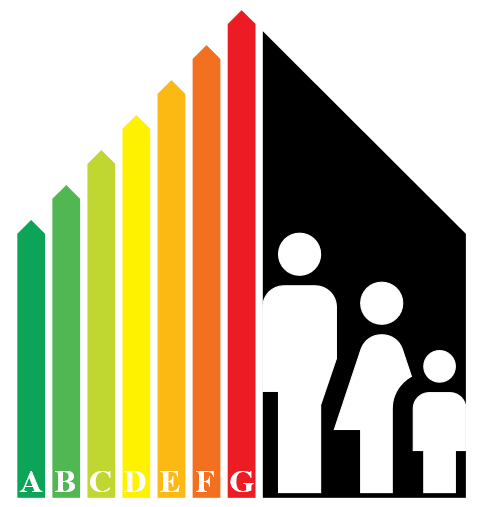

Duże nadzieje wiązane są z domami pasywnymi i o wysokim standardzie energetycznym. Nadzieje
poszczególnych rodzin i całych społeczności; na zdrowie, komfort, oszczędności, czyste powietrze. Dlatego domy
takie powstają i jest ich coraz więcej.
10 Domów
to unikalne w
polskim kontekście badania, finansowane przez Narodowe Centrum Nauki, które pozwolą unaocznić specyfikę domów o
wysokim standardzie energetycznym, z perspektywy codziennego zamieszkiwania: komfortu termicznego, roli
mieszkańców w jego utrzymaniu i powiązanego zużycia energii.
Zapraszamy do zapoznania się z projektem i do udziału.
Rekrutacja trwa!
O projekcie
Jaki jest cel projektu?
Powszechnie uznaje się, że wysoki standard energetyczny możliwy jest dzięki technologiom i systemom instalacyjnym,
które jeszcze parę dekad temu nie były w domach stosowane. Ewolucja sposobu budowania i wyposażenia instalacyjnego
domów rodzi pytania o jej efekt z perspektywy mieszkańców. Czy utrzymanie komfortu wymaga zaangażowania
mieszkańców, czy nie? Jakie jest znaczenie takich czy innych sposobów korzystania z dostępnych technologii dla
komfortu i zużycia energii
Dla intensywnie rozwijającego się budownictwa o dużych ambicjach w zakresie oszczędzania energii, potrzebna
jest informacja zwrotna z użytkowanych domów. Technologie i systemy są sprawdzane w budynkach testowych i
symulacjach. Jednak dopiero całość jaką jest dom wraz z mieszkańcami weryfikuje założenia modelowe. Jak
konkretnie? To chcemy poznać.
Zespół badawczy
Weź udział
Zgłoś zainteresowanie udziałem w projekcie.
Kontakt
Uwaga - formularz w żaden sposób nie pobiera danych osobowych. Prosimy nie podawać imienia i nazwiska –
wystarczy numer telefonu w celu kontaktu w związku z prowadzeniem badań.
Nasz adres
Wydział Architekruty Politechnki WrocławskiejB. Prusa 53/5550-317 Wrocław